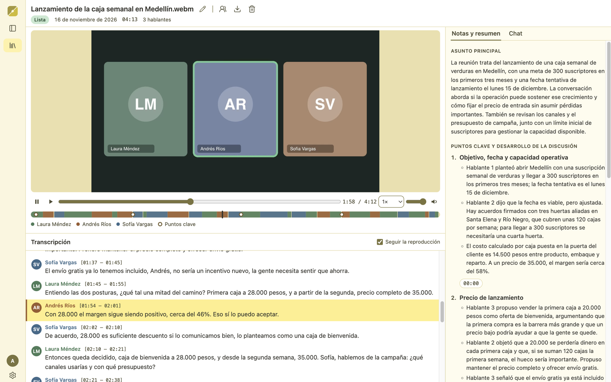
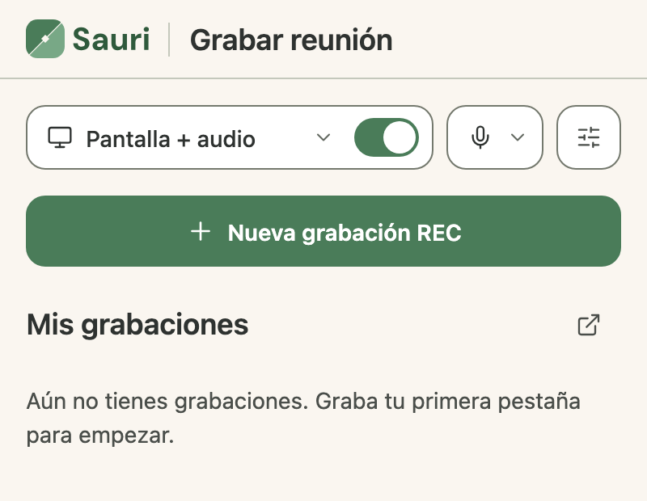
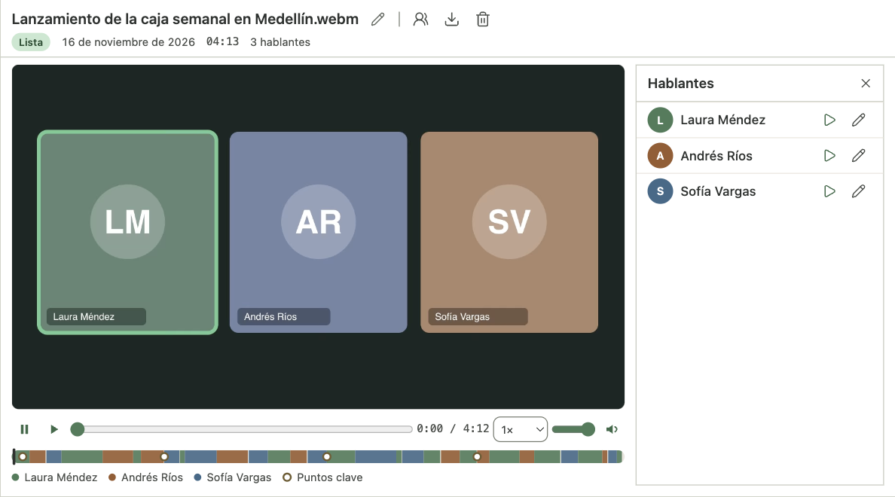
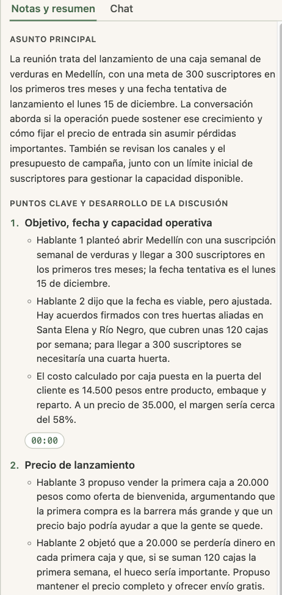

La transcripción sigue al video
Mientras reproduces, la frase que se está diciendo se resalta. Haz clic en cualquier frase para saltar a ese momento.
En desarrollo · acceso anticipado para Mac
Sauri graba la reunión desde una pestaña de Chrome, reconoce quién habló y te deja un resumen en borrador para revisar. La grabación no sale de tu equipo.

Cómo funciona
Abre la extensión, elige la pestaña de la reunión y pulsa grabar. Funciona con Google Meet y con cualquier reunión que tengas abierta en el navegador.

Sauri separa las voces y pone cada intervención a nombre de su hablante. Si no reconoce una voz, la deja como «Hablante 2» hasta que tú le pongas nombre, y la próxima vez la recuerda.

Recibes un borrador con el asunto principal, los puntos clave y los próximos pasos. Tú lo lees, lo ajustas y decides qué compartir.


Lo que puedes hacer
Mientras reproduces, la frase que se está diciendo se resalta. Haz clic en cualquier frase para saltar a ese momento.

Tu biblioteca ordena las grabaciones por fecha, con búsqueda y filtros.

¿Grabaste con otra herramienta? Sube el archivo y Sauri lo procesa igual.
Descarga el video, la transcripción o el resumen.
Crea plantillas para que cada tipo de reunión tenga el resumen que necesitas.
Toma notas durante la grabación; quedan junto a la reunión, separadas de la transcripción.
Privacidad
Sauri hace el trabajo pesado en tu Mac: transcribir, reconocer voces y resumir. No hace falta subir tus reuniones a la nube.
Las grabaciones, las transcripciones, los resúmenes y los nombres que asignas a cada voz.
Si prefieres que un servicio externo haga una tarea, por ejemplo el resumen, lo conectas tú y solo para esa tarea. Ese servicio recibe lo que necesita para hacerla.
Al activar un servicio externo, Sauri te muestra qué sale del equipo y hacia dónde, y te pide confirmarlo.
Lo usamos a diario y lo mejoramos cada semana, pero todavía no es una versión final. Hoy funciona en Mac con Apple silicon y con Google Chrome.
No. Sauri las procesa en tu Mac. Solo sale algo si tú conectas un servicio externo para una tarea, y Sauri te avisa antes.
Cualquier reunión que tengas abierta en una pestaña de Chrome, como Google Meet. También puedes subir grabaciones que ya tengas.
Sí. Pide permiso antes de grabar, como harías con cualquier grabadora.
Un Mac con Apple silicon y Google Chrome.
La aplicación está en español e inglés, y transcribe reuniones en esos idiomas.
Sí. Puedes renombrar a cualquier hablante en cualquier momento, y Sauri usa tus correcciones en tus siguientes reuniones.